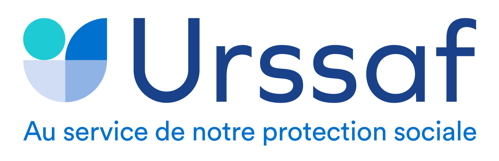

Cas client 01
Structurer l’adoption IA auprès de +800 collaborateurs.
Accompagnement des usages autour d’une IA générative interne et d’un outil de ticketing, avec une logique d’acculturation, de formation et d’amélioration continue.
+800collaborateurs accompagnés
IAacculturation & agents métier
Changeformation & relais terrain
- Création d’un portail IA : accueil, dictionnaire IA, agents IA et organigramme projet.
- Animation de formations, ateliers, portes ouvertes et sessions d’acculturation IA.
- Phase de test utilisateur pour adapter les outils aux besoins réels des métiers.